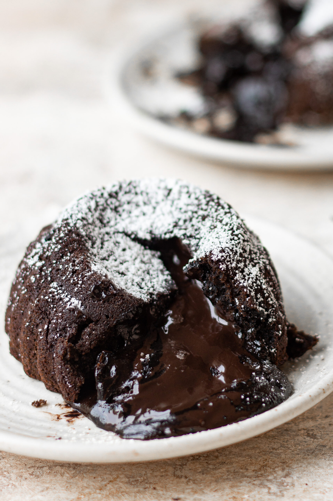

4 INGREDIENT CHOCOLAVA CAKE
Prep Time: 5 minutes
Cook Time: 10 minutes
Total Time: 15 minutes
Serves: 1
Ingredients:
- 10 oreo cookies
- ¼ cup hot milk
- ½ tsp baking soda
- 3 chunks of chocolate

Instructions:
- Put oreos in a bowl amd add hot milk to it. Let it sit for 1-2 minutes.
- Add baking soda and mix everything. Break the lumps if any using the whisk.
- In a greased and dusted mould add the batter till the mould is half full. Add chocolate chunks in the middle and cover with some more batter.
- Bake/ airfry for 8-10 minutes at 180°C. Serve hot with some icecream and ENJOY!
Source: Bake with Shivesh